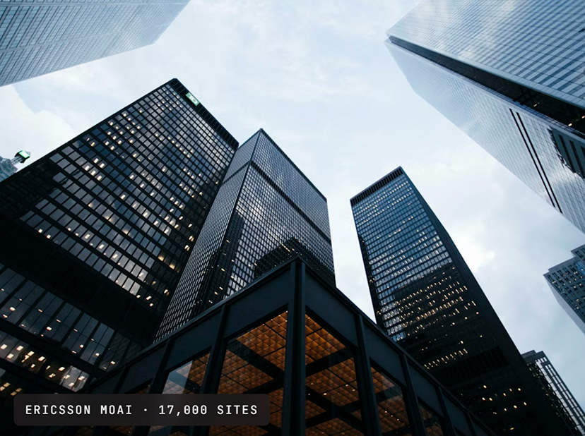

Wireless Portfolio / Capture & Automate
Sigma-AQ Boss
Sigma-AQ Boss closes the post-test gaps that legacy tools can't touch. Log upload, provisioning, analysis, and report generation — the entire post-drive workflow — automated from a single server. The report builds itself.
Overview
Testing isn't the bottleneck. Everything after is. The real delay sits between the drive test and the acceptance sign-off — manual log uploads, disconnected processing, and individually-tailored reports create bottlenecks that cost hours per campaign, every time.
Sigma-AQ Boss is a centralized, web-based platform for remote control and management of Sigma-AQ test probes. It automates the entire post-drive test workflow — log upload, processing, analysis, and report generation — eliminating every manual step between field and finish. Manage unlimited devices from a single server.
Five steps.
Sigma-AQ Boss folds collection, upload, archiving, automated processing, and report generation into a single end-to-end workflow. Each step runs without engineer intervention — from the moment the probe connects to the moment the report lands in the inbox.
Network and RF data captured in the field via Sigma-AQ Test Probes. GPS-tagged, timestamped, and structured for upload. Boss monitors probe status, API events, and probe travel — all visible in real time from the central server without the engineer leaving the office.
Logs transfer to the Sigma-AQ Boss server automatically the moment the drive is complete — no manual file handling, no return-to-office delays. The auto-sync engine ensures nothing is missed and every file is accounted for before processing begins.
Centralized log storage in a structured data warehouse. Every log file indexed, searchable, and audit-ready. Standardized collection across all sessions, regions, and project teams — one version of the truth for every campaign.
Server-side log parsing via Centra-SD, RF analysis and troubleshooting through Sigma-PA. No engineer intervention required at any point in the processing chain — the pipeline runs end-to-end without human handoff between stages.
Pre-built report templates generate automatically — zero-touch. Exports to MS Excel, SQL, or third-party integrations. Reports available in under 10 minutes from the start of the drive, ready to share before the engineer returns to the office.
Highlights
Reports are ready before the engineer returns from the field. Acceptance sign-off moves from the following day to the same session — every campaign, without exception.
One operator manages unlimited test probes from a single server. No specialist needed on-site for log collection, processing, or reporting. The team scales through automation, not headcount.
The same report template, the same KPI engine, the same output standard — every campaign, every region, every team. No per-engineer variation in how the data is interpreted or presented.
Eliminate overnight lab sessions, manual post-processing, and report engineering from every campaign. The cost-per-site drops significantly with every automation step in the chain.
Legacy vs Sigma-AQ Boss
Every manual step between drive completion and acceptance sign-off costs time and headcount. The table below shows exactly where Sigma-AQ Boss removes each bottleneck from the post-test workflow.
Proof
A region's entire mobile network rollout was projected at four months under the existing post-test workflow. With Sigma-AQ Boss handling log upload, archiving, processing, and report generation from a single server, the same campaign completed in one month. 100% automation. Zero manual intervention between field and finish. Standardized global KPIs across every site and every campaign.
Full network rollout completed in a single month with no additional headcount.
Compared to projected timeline using the legacy manual post-test approach.
Per-site acceptance report generated automatically on drive completion.

Sigma-AQ Boss folds automation, scale, and remote management into a centralized platform — designed for operations teams managing distributed test estates from a single server. The tabs below show what it does, what it integrates with, and why it cuts cost-per-site.
Not case studies in the brochure sense. Short reads on what actually broke, what we changed, and the number that moved because of it.
Thousands of sites, one acceptance standard. Boss automates log upload, processing, and report generation — every site under 10 minutes, zero manual intervention, standardized KPIs across every vendor and region.
Manage unlimited Sigma-AQ probes from a single Boss server. Remotely view RF levels, KPI events, and probe travel across the entire fleet — without leaving the office.
Every logfile indexed, searchable, audit-ready. A structured data warehouse that supports historical retrieval, compliance trails, and detailed post-processing through Sigma-PA.